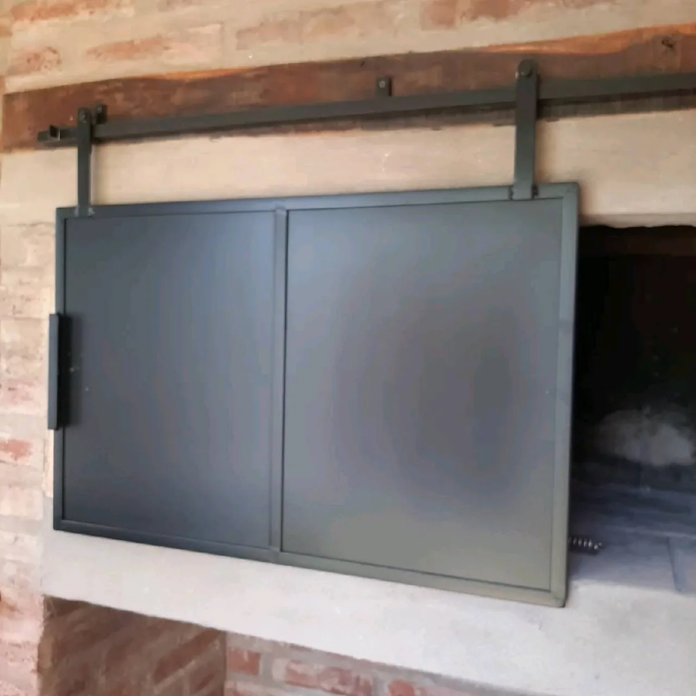
Herrería WS Murua · Córdoba
Cerramientos y aberturas
Cerrar la galería, el quincho o el asador y ganar un ambiente nuevo sin obra húmeda.
Cómo trabajamos
Cerramientos y aberturas
Fabricamos puertas corredizas, puertas tipo granero, ventanas, mamparas para baño, frentes de asador y cerramientos completos de galería. Resolvemos el cerramiento con la abertura que mejor funcione para el uso que le vas a dar.
Es de los trabajos que más cambian una casa: un quincho abierto que se usa tres meses al año pasa a usarse todo el año.
Para las puertas y ventanas con vidrio fijo trabajamos con el mismo vidriero que hace nuestros espejos, y los rieles de las corredizas son de buena calidad: no se traban ni piden mantenimiento seguido.
Hicimos de cero la Proveeduría Shizen, en un country de Córdoba: techo, piso, deck, y toda la estructura con paredes de fibrocemento. Si el proyecto es grande, lo armamos completo.
Incluye
- Cerramientos de galería y quincho
- Puertas corredizas y tipo granero
- Ventanas y puertas de hierro
- Mamparas para baño
- Frentes de asador y puertas guillotina
- Puertas con material desplegado (rejilla) para ventilación
- Puertas y ventanas con vidrio fijo
12 trabajos
Lo que hicimos

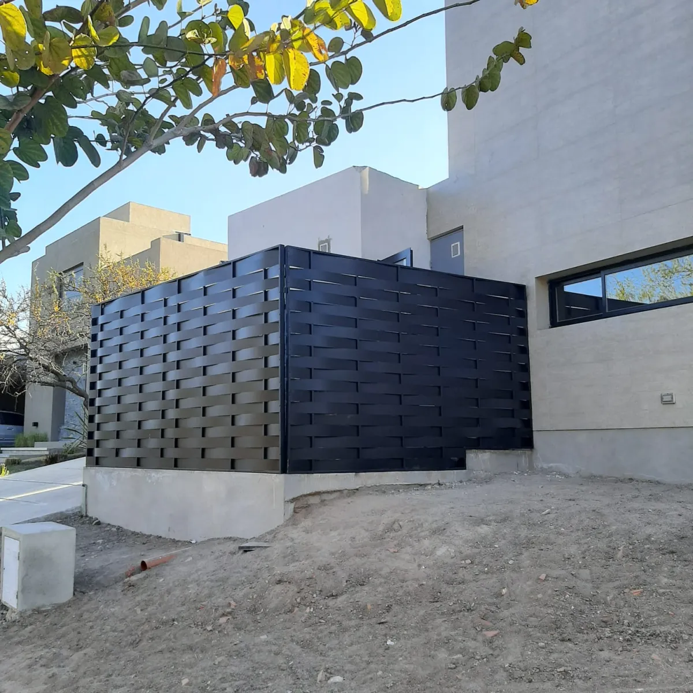
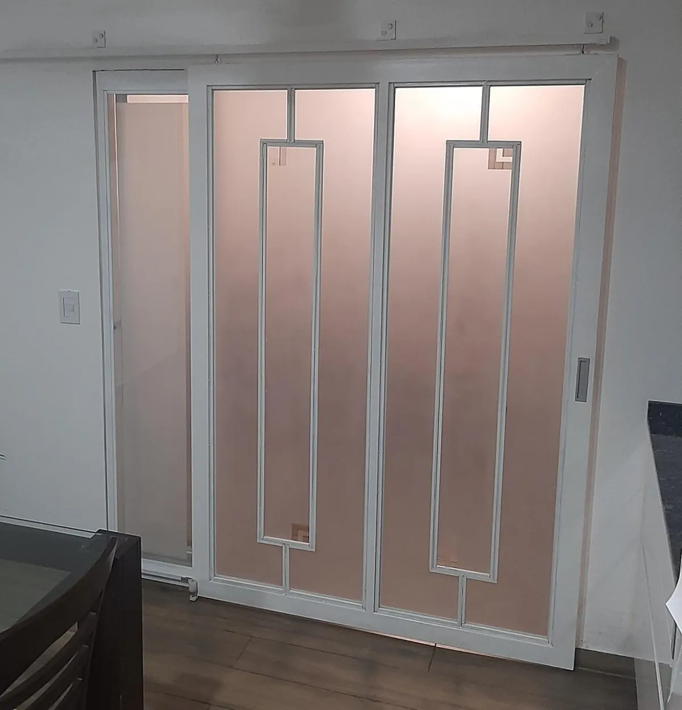
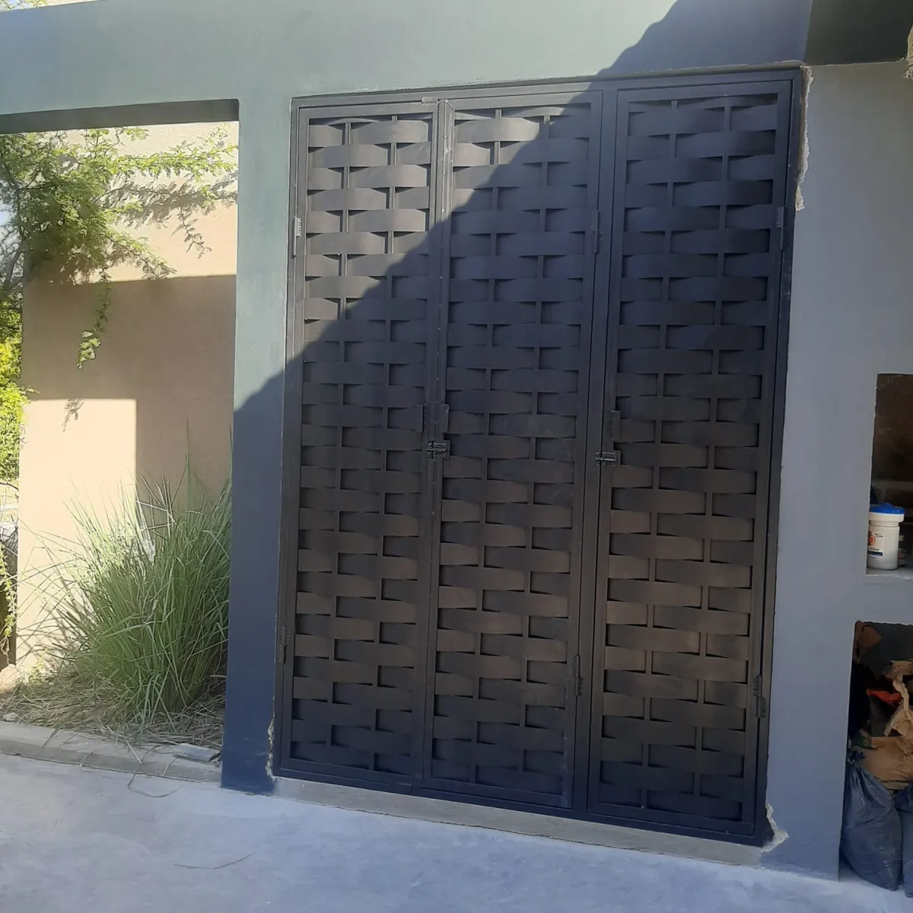
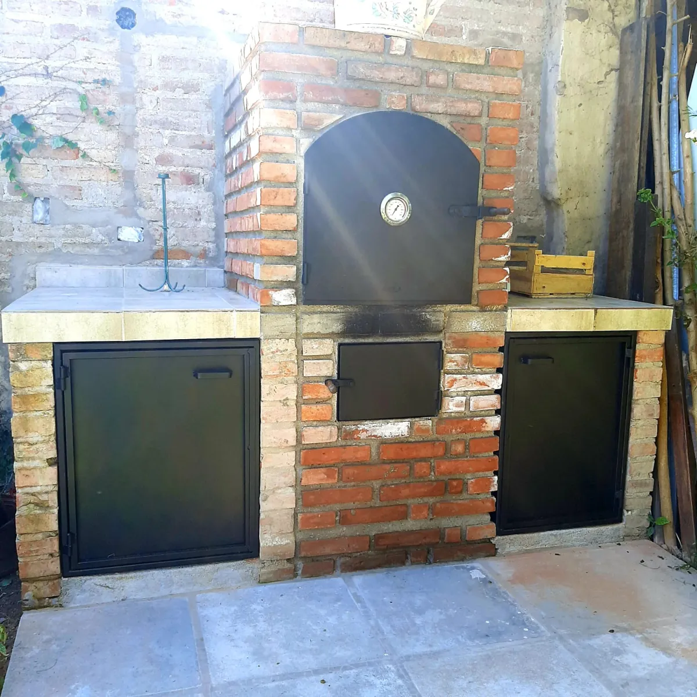
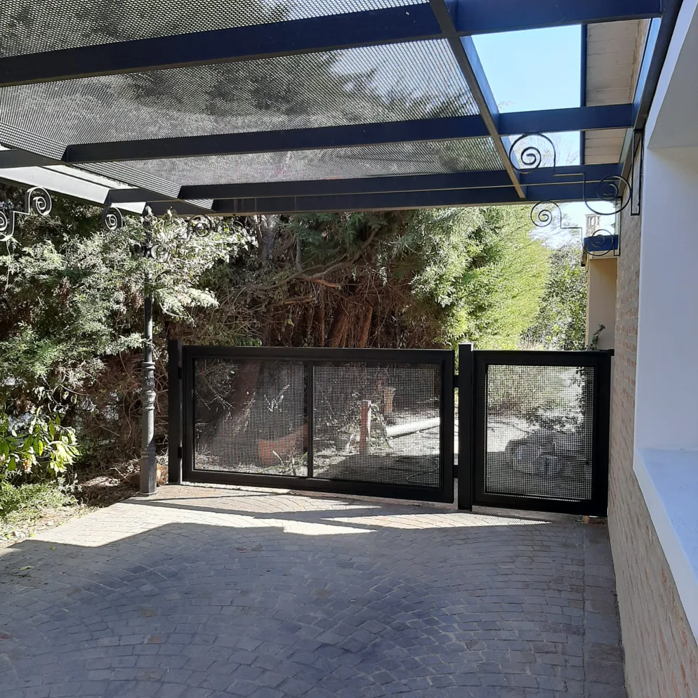
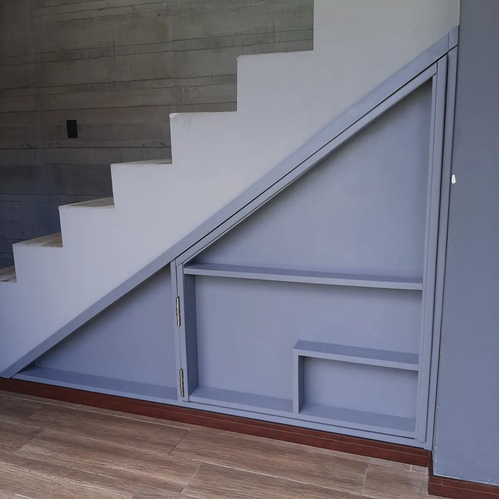
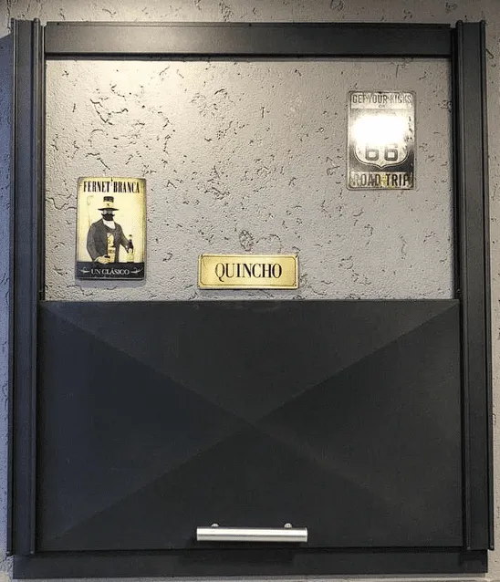
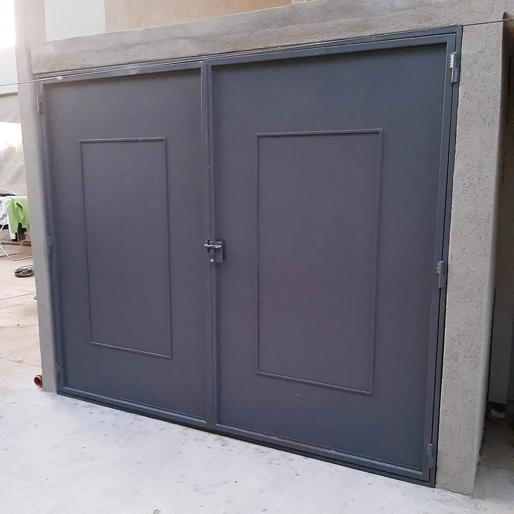
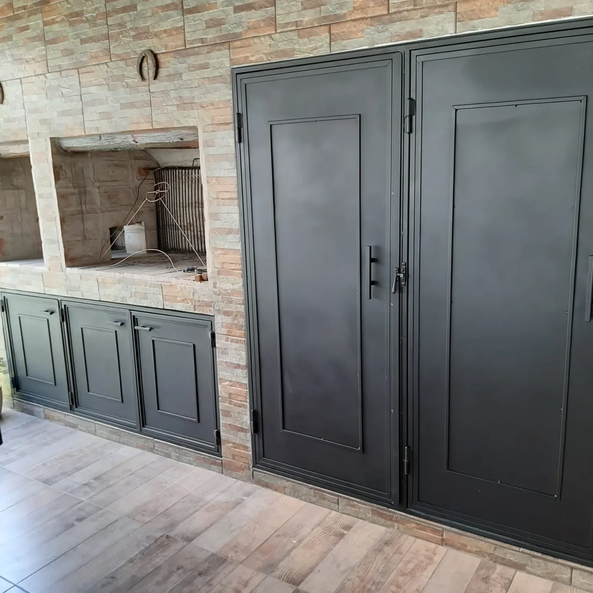
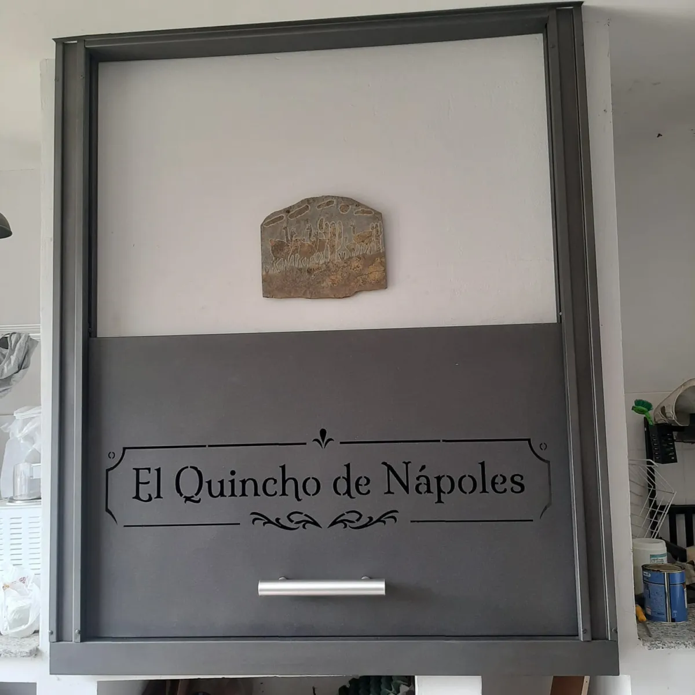
¿Te interesa algo así?
Mandanos una foto del lugar y las medidas aproximadas. Te pasamos el presupuesto sin cargo.
Pedir presupuestoTambién hacemos